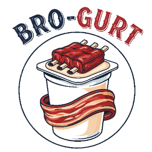
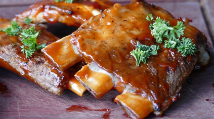

Fuel Your Inner Bro

Our Purpose
Bro-gurt exists to fuel men with high-powered, protein-packed yogurt that matches their appetite for bold flavor and bigger living.
We are redefining what yogurt can be by replacing ordinary flavors with hearty options inspired by foods guys love, including ribs, bacon, and barbecue.
Our purpose is simple: deliver serious nutrition without compromising on taste, so men can power through their day with confidence and strength.
Explore Our Flavors